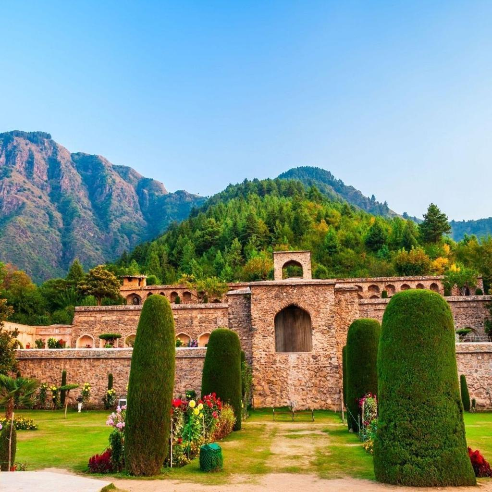

Explore Srinagar
Discover the breathtaking beauty of Srinagar through its famous lakes, gardens, historical monuments and colourful landscapes.



Dal Lake
Dal Lake is Srinagar's most famous attraction, known for peaceful Shikara rides, floating markets and breathtaking mountain views.
Pari Mahal
Pari Mahal is a historic Mughal garden overlooking Dal Lake, offering spectacular panoramic views and beautiful architecture.
Tulip Garden
Asia's largest tulip garden blooms every spring with millions of colourful flowers, making it one of Kashmir's most beautiful attractions.